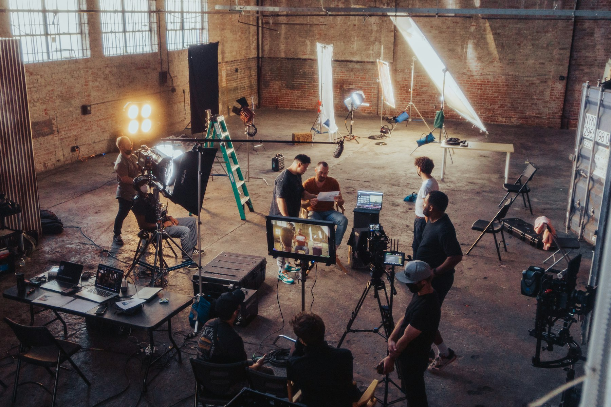
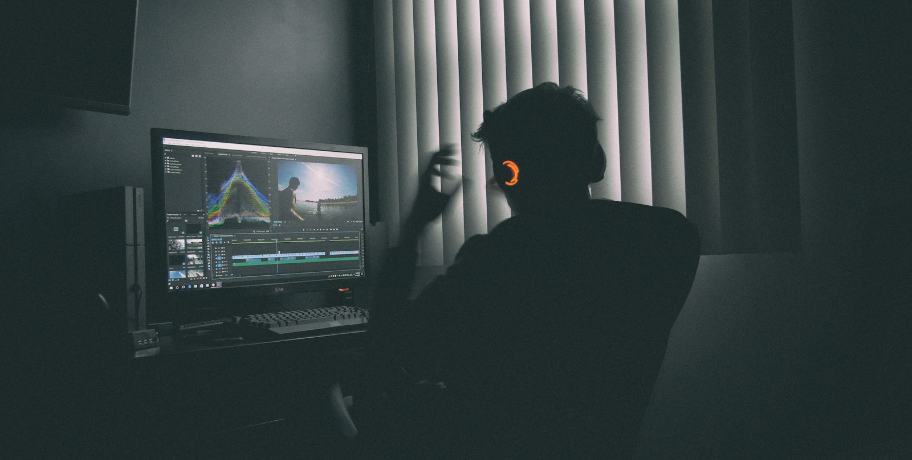
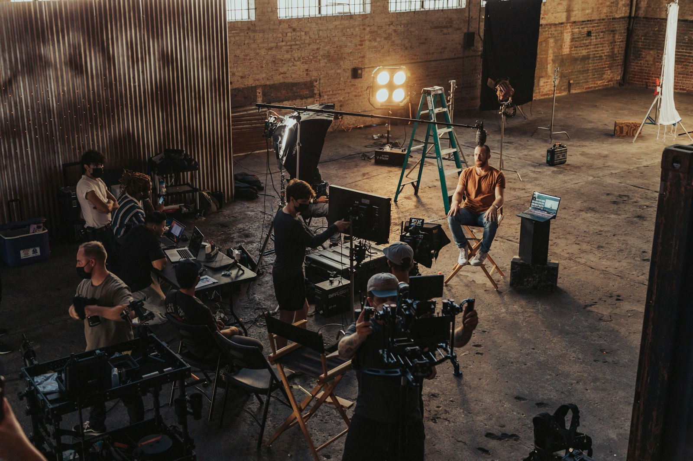
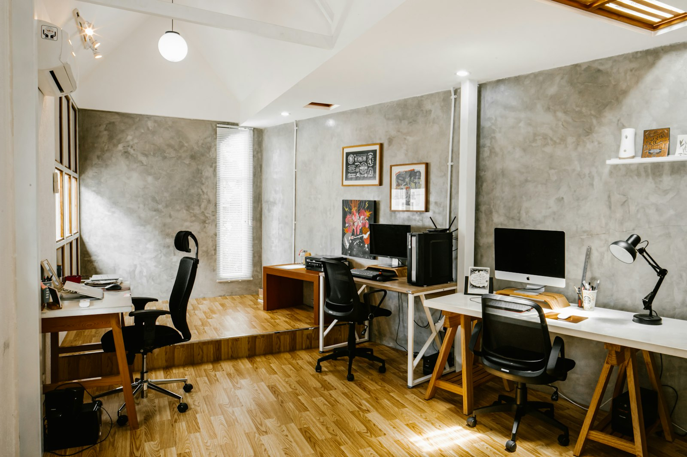

01PLANNING & PRODUCE
企画・プロデュース
地域の商品やお店、まちの魅力を「何を・誰に・どう伝えるか」から一緒に整理し、企画書の形にします。
地元の方のキャスティングや撮影場所の手配など、制作に入るまでの段取りもまとめてお受けします（サンプル）。
博多から、地域に寄り添う企画・映像・ラジオの会社
株式会社Freakは、博多で生まれた企画・制作のチームです。
まちのお店や会社、地域の取り組みに寄り添い、企画から映像・ラジオ番組の制作、届けるためのプロモーションまでを一つのチームで担います。
博多から、全国の地方・地域へ出向いてお手伝いします（サンプル）。

SCENE 01About
私たちについて
地域のことを、地域の目線で伝える。
どの地域にも、まだ知られていない良い商品やお店、人、取り組みがあります。
けれど、知られなければ選ばれません。
Freakは、その土地に足を運び、話を聞くところから始めます。
地域の想いを一緒に整理し、映像やラジオにして、見てほしい人・聴いてほしい人に届くまでを一つの流れで考えます。
博多で生まれた小さなチームだからこそ、担当者が最初から最後まで、顔の見える距離で動きます。
遠くの地域のお客さまとも、現地とオンラインを組み合わせて、同じ距離感で進めます（サンプル）。

SCENE 02Service
事業内容
地域のお店・会社・自治体・団体のみなさまのお手伝いをしています。
企画だけ、映像だけ、ラジオだけのご相談もお受けしています（サンプル）。
01PLANNING & PRODUCE
地域の商品やお店、まちの魅力を「何を・誰に・どう伝えるか」から一緒に整理し、企画書の形にします。
地元の方のキャスティングや撮影場所の手配など、制作に入るまでの段取りもまとめてお受けします（サンプル）。

02VIDEO PRODUCTION
地域のお店や会社の紹介、観光・まちの PR、採用、SNS 向けの短い動画まで。
現地での撮影から編集・字幕・音までを社内で行い、用途に合わせた長さと形で納めます（サンプル）。
03RADIO PROGRAM
番組の企画・構成から、収録・編集、出演者の手配までを担当します。
地域の放送局からネット配信まで、地域の声を聴いてほしい人に届く番組をつくります（サンプル）。
04PROMOTION
つくった映像や番組を、地域の内にも外にも届けるところまで。
SNS での発信の設計、広告の出し方、公開後の数字の振り返りまでを一緒に行います（サンプル）。
SCENE 03Process
進め方
どの段階でも、担当者が直接ご連絡します。
必要に応じて現地にうかがい、遠方の方とはオンラインでの打ち合わせも組み合わせます（サンプル）。
目的・届けたい相手・地域の特徴・ご予算・時期をうかがいます。
伝え方の案と、制作の内容・金額・日程をご提案します。
撮影と編集を行い、確認をいただきながら仕上げます。
公開の手順と、見られ方の振り返りまで伴走します。
SCENE 04Company
会社情報
博多を拠点に、全国の地方・地域に寄り添って活動しています。

SCENE 05Contact
企画の段階でも、まだ形になっていないご相談でも大丈夫です。
まちのこと、お店のこと、地域の取り組みのこと。
どの地域からのご相談も歓迎しています。
お電話で、お気軽にお問い合わせください。